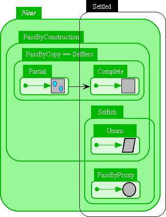

| |
Object Sameness |
||||||
This page picks up where Reference Mechanics left off, and assumes you've already read and understood that page. The philosophy of E's object equality is similar in philosophy to Henry Baker's Equal Rights for Functional Objects or, The More Things Change, The More They Are the Same.
The following diagrams, using the notations developed on the Reference Mechanics page, illustrate the possible states of an object, organized for purposes of reasoning about equality. The black arrow in the diagram represents the one possible transition between these states: from Partial to Complete.

We will reason about the sameness identity of an object by analogy to formulas in logic programming (actually, Herbrand terms). A Settled object is one whose sameness identity is represented by a ground formula -- one with no unbound variables. Unbound variables correspond to Promises, ie, Unresolved references, as we explain on the next page. (*** problematic case: the Unconnected reference. Ground or not?)
-
A Selfish object has atomic creation-based sameness identity, or just creation identity. Each act of creating such an object endows it with a unique atomic identity. It corresponds to a formula consisting of a unique atomic ground symbol (ie, a gensym, not a logic variable) that is not otherwise calculable. In many conventional languages including Smalltalk, Java, and Scheme, all heap allocated objects are Selfish -- they are EQ according to the address assigned to them by where the act of creation allocated them. In E, objects are Selfish (and PassByProxy) by default. Selfish objects are always Settled.
-
A Selfless object has value-based sameness identity, or just value identity. Two Selfless objects are the same (have the same sameness identity) based on their contents, independently of whether they descend from the same act of creation. All Selfless objects are Transparent (reveal all their state in a standard way through their protocol) and Frozen (immuable). An important distinction not shown in the above diagram is between Scalars and Composite Selfless objects:
-
E primitively provides a fixed set of Scalars: null, booleans, ints, float64s, and chars. In conventional languages, these are typically not allocated on the heap. When they are not, conventional languages also treat these as in effect Selfless. As with Selfish objects, each scalar value corresponds to a unique atomic ground symbol, but all these symbols are calculable by any calculation. Another way to look at it is that all scalars are implicitly reachable from anywhere, whereas Selfish object are reachable only by capability rules. Scalars are always Settled.
-
E Strings (bare Twine), being lists of chars, should in theory be dealt with as Composite Selfless objects, but, for various pragmatic reasons, are actually dealt with as Scalars. Strings are always Settled.
-
Composite Selfless objects are composed of components. Two Composite Selfless objects are the same according to a cycle-tolerant recursive sameness comparison of their respective components. A Composite Selfless object is Settled iff all its components are Settled. For any Selfless object x, x.__optUncall() returns a canonical triple [receiver, verb, args] such that E.call(receiver, verb, args) would create x (that is to say, an object that's the same as x). For a given x, there are many triples that, if performed, would create x. However, the triple returned by x.__optUncall() is canonical is that any two Composite Selfless objects that are the same must return the same triple. (This constraint to be enforced by auditing.)
The formula for the sameness identity of a Composite Selfless object is the compound term resulting from replacing each component with its sameness formula. When this expansion encounters a cycle, then, conceptually, it creates an infinite rational tree as the sameness formula. Two Settled Compound Selfless objects are the same if their possibly infinite sameness formulas are the same.
-
*** Examples needed.
*** More to be written
PassByProxy Objects
*** To be written
PassByCopy Objects
*** To be written
Infinite Rational Trees
*** To be written
Unless stated otherwise, all text on this page which is either unattributed or by Mark S. Miller is hereby placed in the public domain.
| |
|
report bug (including invalid html)
|
||||||||